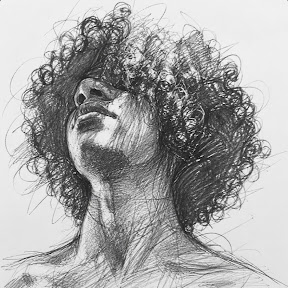

Criação visual
Artes digitais, materiais para redes sociais, capas e composições visuais.
DESIGN GRÁFICODISPONÍVEL PARA OPORTUNIDADES
Olá, eu sou Maxsuel.
Designer em desenvolvimento, apaixonado por criação visual, composição e experiências digitais. Transformo ideias em peças visuais claras, criativas e bem organizadas.

FIG. 01 / MAXSUELSou estudante e designer em desenvolvimento, com interesse em design gráfico e criação visual.
Busco desenvolver minhas habilidades criativas e técnicas na produção de materiais digitais. Tenho dedicação para aprender novas ferramentas, aprimorar conhecimentos e evoluir profissionalmente na área de design.
Meu objetivo é construir experiência prática e contribuir com soluções visuais criativas, funcionais e organizadas.
Conhecimentos que venho desenvolvendo e aplicando em projetos visuais.
Artes digitais, materiais para redes sociais, capas e composições visuais.
DESIGN GRÁFICONoções de layouts, organização de conteúdo, prototipagem e experiência do usuário.
EXPERIÊNCIA DIGITALEdição e ajuste de imagens, tipografia e composição visual.
IMAGEM & TIPOGRAFIAOrganização de conteúdo visual e conhecimentos básicos de Word e PowerPoint.
PACOTE OFFICEExperiências iniciais na criação de materiais gráficos digitais e soluções visuais para diferentes usos.
Estudo visual demonstrativo criado para apresentar direção estética, tipografia e composição.
* A peça gráfica acima é um estudo demonstrativo para este portfólio, não um projeto de cliente.
Ensino Fundamental completo
Em andamento · EEEM Paulo Freire
Previsão de conclusão: 2027
Português Básico · conforme currículo
Inglês Básico
Palmares Sul · Parauapebas — PA
Maxsuel_art · Max Maxy